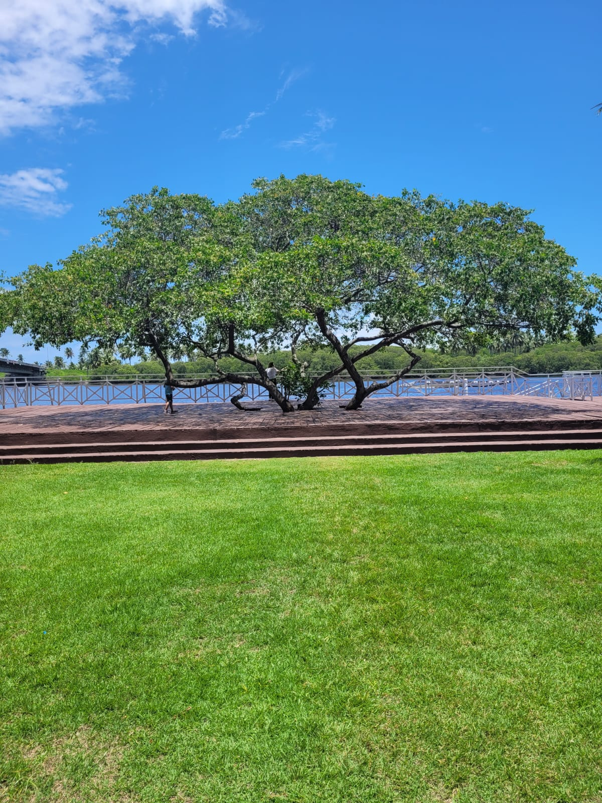

Home
Sobre mim
Curriculo
Conheça meus
serviços
Para conhecer um pouco mais da minha carreira acesse
meu perfil no linkedin
Você encontrará todas as informações sobre minha
trajetória profissional
!!
Estou
totalmente
à disposição para conversarmos mais.
Acesse minhas redes:
Linkedin
Instagram
